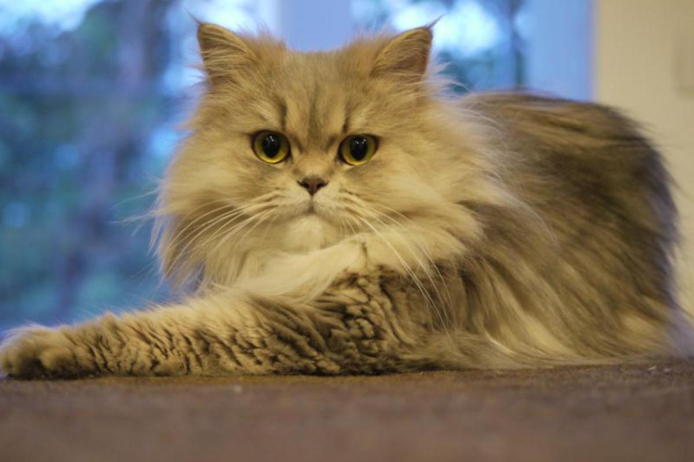
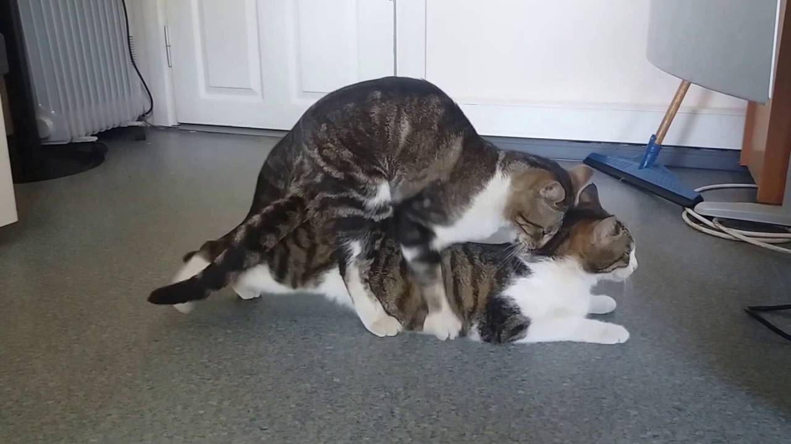
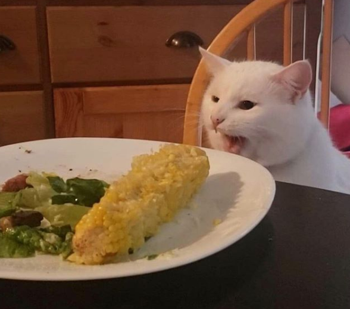

El gato doméstico

El gato se comunica a través de vocalizaciones. Las más populares son su característico maullido y el ronroneo, pero puede aullar, gemir, gruñir y bufar. Los gatos desarrollaron el maullido con la única finalidad de poder comunicarse con el ser humano. Además, adopta poses o expresiones que informan, a sus congéneres, sus enemigos o sus cuidadores, de su ánimo o sus intenciones.
Junto con el perro, es el animal doméstico más popular, como mascota, como ayuda en la lucha contra roedores o ambas cosas.
Por su amplio abanico de presas potenciales, por su alta eficiencia como depredador, y por su elevado éxito reproductivo —especialmente si se suministra artificialmente alimento a las colonias sin tomar medidas adicionales para limitar su fertilidad— el gato doméstico está incluido en la lista de las diez especies exóticas invasoras más dañinas del mundo de la Unión Internacional para la Conservación de la Naturaleza.
razas de gatos, hábitat y ubicación geográfica
estos son algunas de las 76 razas de gatos repatidas por el mundo
Gato persa
{kind=link}
Reconocemos fácilmente al gato persa por su cara ancha y aplanada junto al abundante pelaje, que puede ser de distintos colores. Fueron introducidos en Italia desde la antigua Persia (Irán) sobre el 1620 aunque se desconoce el auténtico origen. El estándar del persa actual, tal y como lo conocemos se fijó en 1800 en Inglaterra y proviene del Angora Turco.
Origen
- África
- Asia
- Europa
Hábitos alimenticios y reproductivos
Hábitos reproductivos
La gata presenta varios estros a lo largo de todo el año, que suelen durar de cuatro a siete días. En el estro, las gatas maúllan más frecuentemente y varios gatos pueden luchar por una hembra en celo, el que venza, se gana el derecho a copular. Aunque la hembra al principio es reacia a la cópula, acaba aceptando al macho, que se acerca a la hembra, la que intentará resistirse por todos los medios a la cópula. Si el macho es hábil, conseguirá morderla por la parte posterior del cuello, inmovilizándola. La penetración es algo dolorosa, ya que el pene del gato, al igual que el del león, presenta unas puntas que frotan la vagina, llamadas espículas, desencadenando una reacción natural que ocasiona la ovulación; debido a que esto no ocurre siempre, es raro que se consiga la fecundación en la primera cópula. Las gatas, además, copulan con varios machos por lo que una camada puede tener diferentes padres. Después de la cópula, la hembra se asea y puede ponerse muy violenta hasta que termine el acicalamiento, momento en que el ciclo se repite.
La hembra alcanza la madurez sexual en un tiempo de entre 4-5 meses; el macho, a los 6-7 meses. La gestación dura 65-67 días y en la camada pueden aparecer de 1 a 10 crías, que, según la Federación Internacional Felina, deben mantenerse con la madre al menos 30 días. Lo más recomendado es separar al gatito de su madre desde la sexta semana hasta la octava, ya que hasta entonces no habrían adquirido algunos nutrientes necesarios: separarlos antes sería un error, debido a que cabe la posibilidad de que mueran o sean más débiles.
{kind=link}
Hábitos alimenticion y de caza
En relación a su tamaño, los gatos domésticos son depredadores muy eficaces. Pueden emboscar y abalanzarse sobre distintos vertebrados usando tácticas similares a los leopardos, pumas, y tigres; es entonces cuando asestan la mordida letal con sus largos dientes caninos que rompen la médula espinal de la víctima, o la asfixia comprimiendo su tráquea.
Puede cazar y comer cerca de cien especies, pero la mayoría de los grandes felinos carecen de tanta diversidad de especies para cazar. Sin embargo, teóricamente, los grandes felinos también pueden cazar las mismas especies que el gato, pero no lo hacen frecuentemente debido al contenido nutricional relativamente bajo que proveen estos animales. Una excepción es el leopardo y el lince ibérico, quienes usualmente cazan conejos y otros animales pequeños.
Los ejemplares bien alimentados pueden cazar y matar aves, ratones, ratas, lagartos y otros pequeños animales en las inmediaciones, para luego mostrar el trofeo de caza a sus dueños. El motivo por el cual lo hacen no está totalmente claro, pero se cree que esta acción está relacionada con los comportamientos de creación de lazos afectivos. Es probable que esperen ser elogiados por su contribución simbólica al grupo. Se sabe que, en la vida salvaje, incluso un macho puede compartir su caza con miembros de su familia. El obsequio de piezas por parte de un animal bien alimentado puede ser usual, e interpretarse como un gesto de cariño y familiaridad.
Debido a su instinto cazador, los gatos callejeros son considerados una plaga en muchos países. En algunas zonas, se requiere que los gatos domésticos sean mantenidos dentro del hogar a toda hora, ya que pueden ser peligrosos para las especies de aves locales en peligro de extinción. Algunos dueños optan por colocarles una campanilla al animal para advertirle a su presa sobre su acercamiento.
Poseen dentadura especializada y un tracto digestivo apto para la digestión de la carne. El premolar y el primer molar componen el par de dientes utilizados para cortar la carne como si fueran tijeras, ubicados a cada lado de la boca. Aunque esta característica se encuentra en los cánidos, es muy desarrollada en los felinos. Su lengua posee papilas en forma de espinas compuestas por queratina, útiles para arrancar pelos, plumas y piel del cadáver.
Los gatos domésticos comen muy poca materia vegetal. Sin embargo, es común que ocasionalmente suplementen su dieta carnívora con pequeñas cantidades de pasto y otras plantas para mejorar el tránsito digestivo y obtener ciertas vitaminas ausentes de la carne. Todos los felinos poseen una característica genética que les impide percibir los gustos dulces debido, en gran parte, a sus hábitos alimenticios y su aversión a los frutos. La mayoría de los alimentos equilibrados para gatos a menudo contienen grandes cantidades de maíz, arroz, productos derivados de la carne, minerales y vitaminas.
{kind=link}